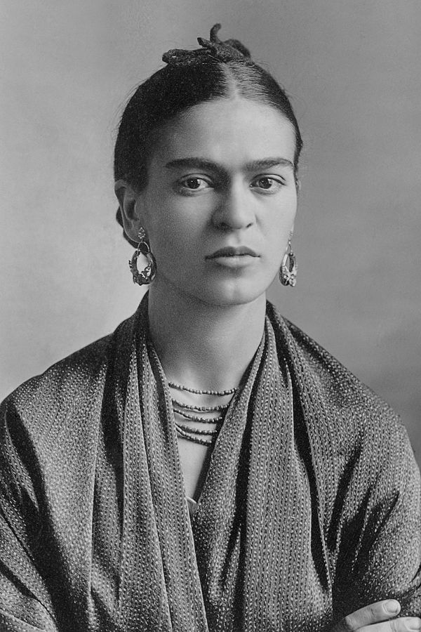

Frida Kahlo
The Woman Who Changed the Art World

Frida Kahlo - Portrait by Guillermo Kahlo
- 1907 - Born Magdalena Carmen Frieda Kahlo y Calderón on July 6, in Coyoacán, Mexico City, Mexico.
- 1913 - Contracts polio, which causes her to be bedridden for nine months.
- 1922 - Enrolls at the renowned National Preparatory School. She is one of the few female students to attend the school. She will also join the Mexican Communist Party.
- 1925 - The bus she is travelling on collides with a streetcar, causing Frida several serious injuries. She starts painting during her recovery.
- 1928 - Marries the famous Mexican muralist Diego Rivera, often living separately.
- 1939 - Divorces Rivera, marrying him again in 1940. In 1939 she also lives in Paris for a time, befriending Pablo Picasso and Marcel Duchamp.
- 1941 - Receives a commission from the Mexican government, but she is unable to finish the project due to cronic health problems and the loss of her father. Meanwhile her popularity continues to grow.
- 1953 - Receives her first exhibition in Mexico, arriving by ambulance to the opening.
- 1954 - Dies at the age of 47. Her last words are "I hope the exit is joyful and i hope never to return."
- Frida Kahlo's life time line -
If you want to read more about this incredible human being and artist, here is her Wikipedia entry.